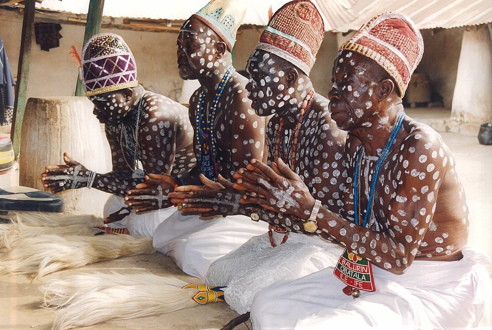
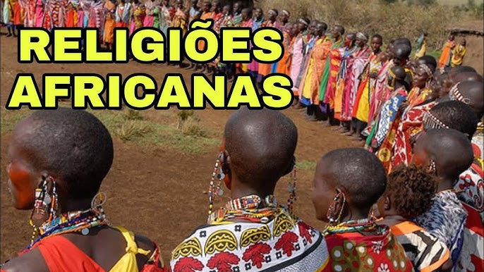

África: Berço das Religiões
A África, continente de imensa diversidade cultural e espiritual, é o berço de inúmeras tradições religiosas que influenciaram profundamente as práticas espirituais em todo o mundo, especialmente nas Américas. As religiões africanas tradicionais são caracterizadas por sua rica mitologia, rituais elaborados e uma profunda conexão com a natureza e os ancestrais. Estas tradições espirituais não são meros sistemas de crenças, mas formas completas de vida que integram aspectos sociais, culturais, médicos e espirituais.
As Religiões Tradicionais Africanas
As religiões tradicionais africanas são extremamente diversas, refletindo a multiplicidade de culturas e etnias do continente. No entanto, compartilham algumas características fundamentais: a crença em um ser supremo criador, a veneração dos ancestrais, a importância dos espíritos da natureza e o papel central dos rituais comunitários. Estas tradições são predominantemente orais, transmitidas de geração em geração através de histórias, canções, danças e rituais.
Entre os povos iorubás da Nigéria, por exemplo, existe a crença em Olodumare, o ser supremo, e nos Orixás, divindades que representam diferentes aspectos da natureza e da experiência humana. Já entre os povos bantu da África Central, encontramos a veneração dos ancestrais e a crença em Nzambi ou Nzambi a Mpungu como o criador supremo. Estas tradições religiosas estão intrinsecamente ligadas à vida cotidiana, influenciando desde a organização social até as práticas de saúde e bem-estar.
A Diáspora Africana e o Nascimento das Religiões Afro-Brasileiras
Com o advento do tráfico transatlântico de escravos, milhões de africanos foram forçadamente transportados para as Américas, trazendo consigo suas tradições culturais e religiosas. No Brasil, este processo resultou no surgimento de diversas religiões afro-brasileiras, como o Candomblé, a Umbanda, o Tambor de Mina, o Xangô do Recife e a Quimbanda, entre outras.
Estas religiões representam uma síntese criativa entre as tradições africanas e elementos do catolicismo, espiritismo e, em alguns casos, tradições indígenas. Surgiram como formas de resistência cultural e espiritual, permitindo que os africanos escravizados e seus descendentes mantivessem uma conexão com suas raízes, mesmo em um contexto de opressão e tentativas de apagamento cultural.
O Papel do Cristianismo na Escravidão
É importante reconhecer o papel contraditório que o cristianismo desempenhou durante o período da escravidão. Por um lado, a religião cristã foi utilizada como instrumento de dominação e controle, justificando a escravidão através de interpretações distorcidas das escrituras. Missionários e líderes religiosos frequentemente colaboravam com o sistema escravista, pregando a submissão e a aceitação do sofrimento como caminho para a salvação.
Muitos escravizadores utilizavam o nome de Deus e passagens bíblicas para legitimar a desumanização e exploração dos povos africanos. A conversão forçada ao cristianismo era uma prática comum, visando apagar as tradições religiosas africanas e facilitar o controle sobre os escravizados. Igrejas eram construídas nas fazendas, e os senhores de escravos frequentemente obrigavam os escravizados a participar de missas e rituais cristãos.
Por outro lado, é importante destacar que também existiram cristãos que se opuseram à escravidão, baseando-se em princípios de igualdade e dignidade humana presentes no cristianismo. Movimentos abolicionistas muitas vezes tinham motivações religiosas, e algumas comunidades cristãs ofereciam apoio e refúgio para escravizados fugitivos.
Sincretismo Religioso como Estratégia de Sobrevivência
Diante da repressão às suas práticas religiosas tradicionais, os africanos escravizados desenvolveram estratégias sofisticadas de sincretismo religioso. Associaram seus orixás, voduns e nkisis a santos católicos, permitindo que continuassem a venerar suas divindades sob o disfarce do catolicismo. Este sincretismo não foi uma simples mistura de crenças, mas uma estratégia consciente de preservação cultural em um contexto hostil.
Por exemplo, Xangô, orixá da justiça e dos trovões, foi associado a São Jerônimo ou São João Batista; Iemanjá, orixá dos mares, foi associada a Nossa Senhora dos Navegantes ou Nossa Senhora da Conceição; e Oxalá, orixá da criação, foi associado a Jesus Cristo. Estas associações permitiram que os rituais africanos continuassem a ser praticados, mesmo que de forma velada.
Perseguição e Resistência
Apesar das estratégias de sincretismo, as religiões de matriz africana enfrentaram intensa perseguição ao longo da história brasileira. Durante o período colonial e imperial, a prática destas religiões era criminalizada, com seus praticantes sujeitos a punições severas. Mesmo após a abolição da escravidão e a proclamação da República, a perseguição continuou, agora sob o pretexto de combate ao "curandeirismo" e à "feitiçaria".
No início do século XX, terreiros eram frequentemente invadidos pela polícia, seus objetos sagrados confiscados e seus líderes presos. Apenas na década de 1970, com o processo de redemocratização do país, as religiões afro-brasileiras começaram a conquistar maior liberdade de culto e reconhecimento legal.
Legado e Importância Contemporânea
Hoje, as religiões de matriz africana são reconhecidas como parte fundamental do patrimônio cultural brasileiro. Representam não apenas sistemas de crenças, mas repositórios de conhecimentos ancestrais sobre plantas medicinais, ecologia, música, dança e filosofia. São espaços de acolhimento e solidariedade, especialmente para populações marginalizadas.
No entanto, estas religiões ainda enfrentam preconceito e intolerância religiosa, muitas vezes alimentados por desinformação e estereótipos negativos. O reconhecimento e respeito à diversidade religiosa brasileira, incluindo as tradições de matriz africana, é um passo essencial para a construção de uma sociedade mais justa e inclusiva.
As religiões afro-brasileiras, como a Umbanda e a Quimbanda, representam a resistência e a criatividade cultural de um povo que, mesmo diante das adversidades mais extremas, conseguiu preservar e reinventar suas tradições espirituais. São testemunhos vivos da força do espírito humano e da importância da conexão com nossas raízes ancestrais.